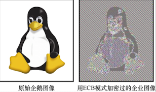

加密算法分类
Table of Contents
- 哈希函数
- 不可逆加密，用于摘要、完整性校验、密码存储
- 对称加密
- 加密与解密使用相同密钥，速度快，常用于数据传输加密
- 非对称加密
- 加密与解密使用不同密钥（公钥/私钥），常用于密钥交换与身份认证
一、哈希函数
㈠ 哈希函数
| 算法 | 家族 | 年代 | 输出位数 | 可能性数量 | 性能 | 安全性备注 |
|---|---|---|---|---|---|---|
| ❌ MD5 | MD | 1991 | 128 bit | 2^128 ≈ 3.4e+38 | 快 | 已被完全破解，不可用于安全场景 |
| ❌ SHA-1 | SHA-1 | 1995 | 160 bit | 2^160 ≈ 1.46e+48 | 较快 | 已被实验证实碰撞，不可用于安全场景 |
| SHA-224 | SHA-2 | 2001 | 224 bit | 2^224 ≈ 2.7e+67 | 中等 | 基本安全，使用较少 |
| SHA-256 | SHA-2 | 2001 | 256 bit | 2^256 ≈ 1.16e+77 | 中等 | 推荐，广泛用于 TLS/签名 |
| SHA-384 | SHA-2 | 2001 | 384 bit | 2^384 ≈ 3.94e+115 | 较慢 | 高强度，适用于更安全需求 |
| SHA-512 | SHA-2 | 2001 | 512 bit | 2^512 ≈ 1.34e+154 | 较慢 | 非常高强度，适合高安全场景 |
| SHA3-256 | SHA-3 | 2015 | 256 bit | 2^256 ≈ 1.16e+77 | 略慢 | NIST 新标准，更抗碰撞和量子攻击 |
| SHA3-512 | SHA-3 | 2015 | 512 bit | 2^512 ≈ 1.34e+154 | 略慢 | 高安全等级，结构不同于 SHA-2 |
| BLAKE2b | BLAKE2 | 2013 | 512 bit | 2^512 | 非常快 | 安全性接近 SHA-3，但更高性能 |
| BLAKE3 | BLAKE3 | 2020 | 任意 | 2^x | 极快 | 多核并行友好，新一代性能王者 |
- 不应该再使用 MD（MD2、MD4、MD5）家族的算法，现在高性能算法（如BLAKE2）的生成速度也很快，同时更安全；
- 生成 SHA-256
echo -n 'hello' | openssl dgst -sha256，生成 SHA3-256 需要dgst -sha3-256 - 应用最广泛的哈希函数是 SHA-2，但是推荐使用的是 SHA-3，因为 Merkle-Damgård 构造容易受到长度扩展攻击；
- 考虑兼容与通用标准选择 SHA-256；考虑高安全选择 SHA3-256；极致的性能选择 BLAKE3；兼顾性能和广泛支持选择 BLAKE2b；
㈡ 密码哈希函数（Password Hashing）
| 算法 | 年代 | 内存硬度 | 并行性 | 安全性 | 现状 |
|---|---|---|---|---|---|
| bcrypt | 1999 | 低 | 差 | 尚可 | 广泛使用（Django、Ruby on Rails），但不抗 GPU |
| PBKDF2 | 2000 | 无 | 好 | NIST采纳 | 仍被用在很多标准（WPA2、PKCS#5），但防 GPU 能力差 |
| scrypt | 2009 | 支持 | 不佳 | 还可以 | 曾是热点，被 Argon2 逐渐替代 |
| Argon2 | 2015 | 强 | 好 | 强 | PHC 优胜者 Password Hasing Competition |
| Balloon | 2016 | 支持 | 一般 | 理论好 | 很少部署，学术用途居多 |
| Yescrypt | 2017 | 强 | 好 | 强 | 一些 Linux 发行版默认密码哈希（如 Fedora） |
- 防止网站密码泄露，只存储密码的哈希值；
- 防止攻击者穷举搜索用户密码，通过加盐技术来解决，在这种意义上，为每个用户创建了不同的哈希函数，攻击者无法预先计算彩虹表；
- 密码哈希函数的运行速度应该很慢，即使是专用硬件，也只能有限的通过优化内存改善攻击效果；
㈢ 消息认证码（Message Authentication Code, MAC）
| 类型 | 示例算法 | 安全性 | 用途 |
|---|---|---|---|
| HMAC | HMAC-SHA256、HMAC-SHA512 | 高，广泛使用 | TLS、JWT、API签名等 |
| CMAC | AES-CMAC | 高 | 某些嵌入式和军用标准 |
| KMAC | KMAC128、KMAC256 | 高（抗量子） | 替代 HMAC，用于新系统 |
| Poly1305 | Poly1305-AES | 高、快速 | TLS 1.3、QUIC 中广泛使用 |
| UMAC/VMAC | 较高 | 高速Mac，UDP认证、网络加密层等 |
- 单独的消息认证不负责加密，如果还有加密需求，选择认证加密算法↓；
- 哈希函数可以为任意数据提供完整性，因为哈希函数是一种公开算法，攻击者可以同时修改明文和哈希值；
- 消息认证码需要密钥；
二、对称加密
㈠ 对称加密算法
| 算法 | 年代 | 块大小 / 模式 | 安全性 | 性能 | 是否推荐 | 说明 |
|---|---|---|---|---|---|---|
| ❌️ DES | 1977 | 64-bit / ECB | 弱 | 慢 | 不推荐 | 已被破解 |
| 3DES | 1978 | 64-bit / CBC | 弱 | 慢 | 淘汰中 | DES 的三重迭代 |
| AES-128 | 2001 | 128-bit / CBC | 强 | 快 | 推荐 | 最常用、FIPS 认证 |
| AES-256 | 2001 | 128-bit / CBC | 更强 | 稍慢 | 推荐 | 高安全性需求使用 |
| ChaCha20 | 2008+ | Stream cipher | 强 | 非常快 | 移动端首选 | Google 和 TLS 1.3 使用 |
| Blowfish | 1993 | 64-bit | 中 | 一般 | 冷门 | 已较少使用 |
| Twofish | 1998 | 128-bit | 强 | 一般 | 冷门 | AES 竞争者之一 |
- 1997年，NIST启动了一场高级加密标准（AES）的公开竞赛，旨在取代 NIST 20年前公布的 数据加密标准（DES）算法 。整个竞赛持续了3年，期间来自不同国家和地区的密码学团队共提交了15个算法。最终 Vincent Rijmen 和 Joan Daemen 提交的 Rijndael 算法胜出。2001年，NIST 将 AES 作为联邦信息处理标准 FIPS197 的一部分公开发布。当今 FIPS197 标准中的 AES 算法仍然是一个重要的加密算法。
- 对称加密的安全性依赖于密钥的保密性；
- CBC、ECB 指的是分组加密模式 ↓
- 对称加密算法又可分为：非认证加密算法、认证加密算法；
分组加密模式
| 模式 | 并行加密 | 并行解密 | 安全性 | 说明 |
|---|---|---|---|---|
| ECB | ✓ | ✓ | × 非常差 | 不应再使用 |
| CBC | × | ✓ | ✓ 较安全 | 常见，需 IV，不可并行加密 |
| CFB | × | ✓ | ✓ | 类似 CBC，但可流加密 |
| OFB | ✓ | ✓ | ✓ | 将分组加密转为流加密 |
| CTR | ✓ | ✓ | ✓ 非常安全 | 使用计数器，可完全并行 |
| GCM | ✓ | ✓ | ✓ + MAC 验证 | 高性能+认证，现代首选（如 TLS） |
- ECB 模式加密图像后仍能看到原图轮廓（因为每个块独立）

㈡ 认证加密（Authenticated Encryption, AE）
如果只用普通的对称加密算法（如 AES-CBC），虽然攻击者看不懂数据内容，但可以悄悄篡改密文，你却无法感知。
为了防止密文的改变，可以使用消息认证码（MAC）算法。使用 HMAC（基于哈希的 MAC 算法）结合哈希函数 SHA-256 来提供完整性校验。
AES-CBC-HMAC，先对明文加密，再用 HMAC 算法认证密文和IV，这样即便敌手篡改了密文和IV，也无法生成合法的认证标签；
具体来说，先对完成填充的明文进行加密，再用 MAC 算法认证密文和IV。这样一来，即便敌手篡改了密文和IV，也无法生成合法的认证标签。
这样的构造称为先加密再认证（Encrypt-then-MAC，EtMAC）。其他如先认证再加密（MAC-then-Encrypt，MACtE）有时会导致巧妙的攻击（如Vaudenay填充预言机攻击）。
但是 AES-CBC-HMAC 不是开发者友好型密码算法，下面是标准化一体式的认证加密方案
- AES-GCM，绝对的主流（Web、TLS、VPN），性能好，有硬件加速，AES 兼容性强；
- ChaCha20-Poly1305 移动端首选；
- AES-GCM-SIV，抗 Nonce 误用的认证加密算法；
三、非对称加密
- 非对称加密算法允许加密的消息长度是有限的；
- 与对称加密相比，非对称加密和解密的速度相当慢，这主要是因为对称加密是面向比特的，而非对称加密常涉及大量复杂的数学运算；
㈠ 密钥交换
| 算法 | 类型 | 性能 | 安全性 | 应用场景 |
|---|---|---|---|---|
| RSA | 整数分解 | 快 | 已不推荐 | 老 TLS（1.2 以下） |
| DH | 离散对数 | 中 | 中（传统） | 老 TLS / IPSec |
| ECDH | 椭圆曲线（ECC） | 快 | 高 | TLS 1.2/1.3，SSH |
| X25519 | ECC 优化 | 更快 | 很高 | TLS 1.3，WireGuard |
- 密钥交换算法是通信双方在不安全信道中协商共享密钥的一种密码协议，这个密钥后续将被用于对称加密通信，它是现代加密通信的基础部分；
- 密钥交换的过程：Alice 和 Bob 都使用密钥生成算法生成一对密钥（私钥和公钥），双方将各自的公钥发送给对方。
然后，Alice 使用自己的私钥和 Bob 的公钥计算出共享密钥、同时 Bob 使用自己的私钥和 Alice 的公钥计算出共享密钥。
由于算法的设计：①共享密钥是相同的 ②透露公钥不会暴露双方的私钥和共享密钥； - ECDH 因其密钥较小而取代 DH；
- 密钥交换算法推荐使用 X25519；
㈡ 混合加密
混合加密是非对称加密原语和对称加密原语的组合。先生成一个对称加密的密钥，并用 Alice 的公钥加密这个对称密钥，因为只有 Alice 有自己的私钥，所以 Alice 通过私钥解密获得对称密钥，再用对称密钥解密已加密的消息。
- ECIES，使用 ECDH 算法进行密钥交换，之后，将共享密钥当作 AES-GCM 这类认证加密算法密钥；
㈢ 零知识证明（Zero-Knowledge Proof，ZKP）
㈣ 数字签名（Digital Signature）
- 只有签名者本人可以对任意消息生成签名；
- 任何人都可以验证签名者对消息的签名；
- 数字签名类似于消息认证码算法，但是消息认证码算法需要签名人和验证人都知道密钥，验证方可以使用这个密钥伪造一条消息和消息的MAC；
| 算法 | 基于的数学问题 | 性能 | 安全性备注 |
|---|---|---|---|
| RSA-PSS | 大整数分解 | 慢（特别是验证） | RSA 的更安全变种，古老兼容性好，但需足够大密钥才安全 |
| DSA | 离散对数（DLP） | 慢 | 过时；有泄露私钥的历史问题，不推荐 |
| ECDSA | 椭圆曲线离散对数（ECDLP） | 快（验证略慢） | 签名随机数泄露会导致私钥泄漏 |
| Ed25519 | 椭圆曲线离散对数（ECDLP） | 非常快 | 设计抗随机数失败；默认安全曲线； 现代推荐 |
| Ed448 | 椭圆曲线离散对数（ECDLP） | 中等 | 更高安全级别，256 位对抗强量子攻击 |
| XMSS | 安全哈希函数（Merkle Tree） | 慢、状态型 | 后量子安全；签名数有限；RFC 8391 标准化 |
| SPHINCS+ | 安全哈希函数（Merkle 树、FORS） | 慢（尤其是验证） | 无状态，后量子安全，NIST PQC 选中算法之一 |
- RSA 签名和 RSA 加密的使用方式刚好相反，签名时使用私钥对消息进行加密，验证签名时使用公钥对签名进行解密，对比运算的返回值与初始消息即可知道签名是否有效；
- 因为 RSA 是第一个被标准化的签名方案，所以被广范使用，但是也因滥用而引起许多安全问题；
- ECDSA 因其密钥较小而取代 DSA；
- EdDSA 在实用密码学上被认为是最先进的数字签名；
EdDSA 是一种数字签名算法的通用设计思想。实际使用时，实例化 EdDSA 通常使用 Edwards25519 曲线，将这个实例化的算法称为 Ed25519；
四、伪随机数生成、密钥派生（Key derivation function, KDF）
| 算法 | 基于的数学问题 | 性能 | 安全性备注 |
|---|---|---|---|
| PBKDF2 | HMAC（SHA-1/SHA-256等）迭代运算 | CPU 友好，迭代次数可调 | 标准化广泛支持，但易受 GPU/ASIC 暴力破解 |
| bcrypt | Blowfish key schedule 延迟 | 较慢，适度抗 GPU | 输出最长 72 字节口令，安全性好于 PBKDF2 |
| scrypt | 内存难题 | 占用大量内存，抗 GPU 优秀 | 适合防御大规模硬件攻击，不适合低内存环境 |
| Argon2i | 内存难题 + 并行哈希 | 可调 CPU/内存/并行度 | 防御侧信道攻击，推荐口令存储 |
| Argon2d | 内存难题 + 并行哈希 | 高性能抗 GPU | 更适合不怕侧信道的环境 |
| Argon2id | 内存难题 + 并行哈希 | 性能与安全性均衡 | PHC 冠军，现代口令存储首选 |
| HKDF | HMAC（SHA-256/SHA-512） | 高效 | 需要高熵输入（如 DH 共享密钥） |
| TLS PRF | HMAC（SHA-256/SHA-384） | 高效 | 仅在 TLS 内部使用 |
| IKE KDF | HMAC（SHA 系列） | 高效 | 用于 IPsec/IKE 密钥派生 |
- 密钥派生函数（KDF）需要按用途分开选择合适的算法：
- 存储密码：首选 Argon2id，其次选择 scrypt，最后选择 PBKDF2；
- 网络协议派生会话密钥：HKDF 首选；
- 基于 SHA-3 的系统选择 KMAC/cSHAKE；
- 老系统迁移使用 PBKDF2 过渡，逐步替换为 HKDF/Argon2；
- 存储密码：首选 Argon2id，其次选择 scrypt，最后选择 PBKDF2；